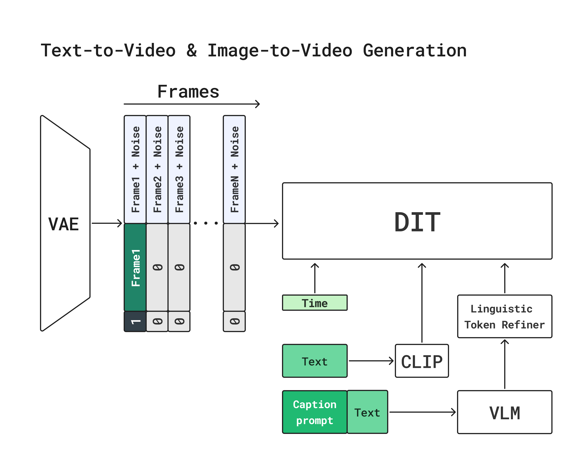
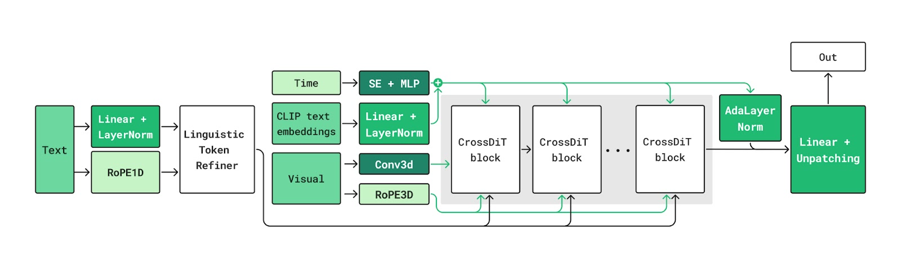
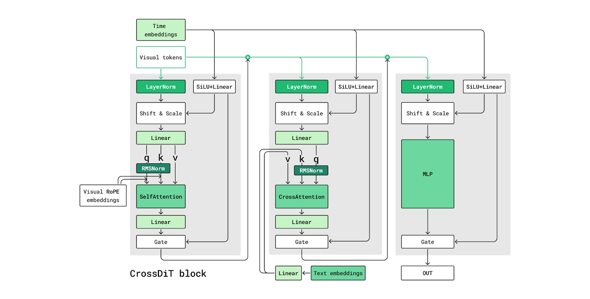
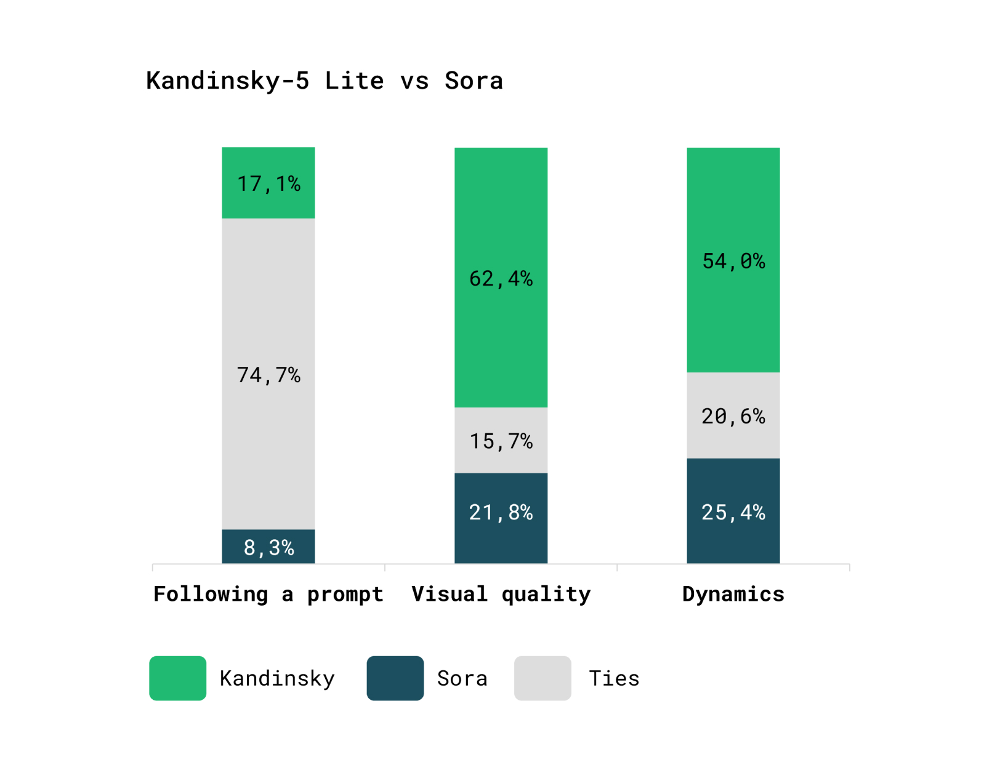
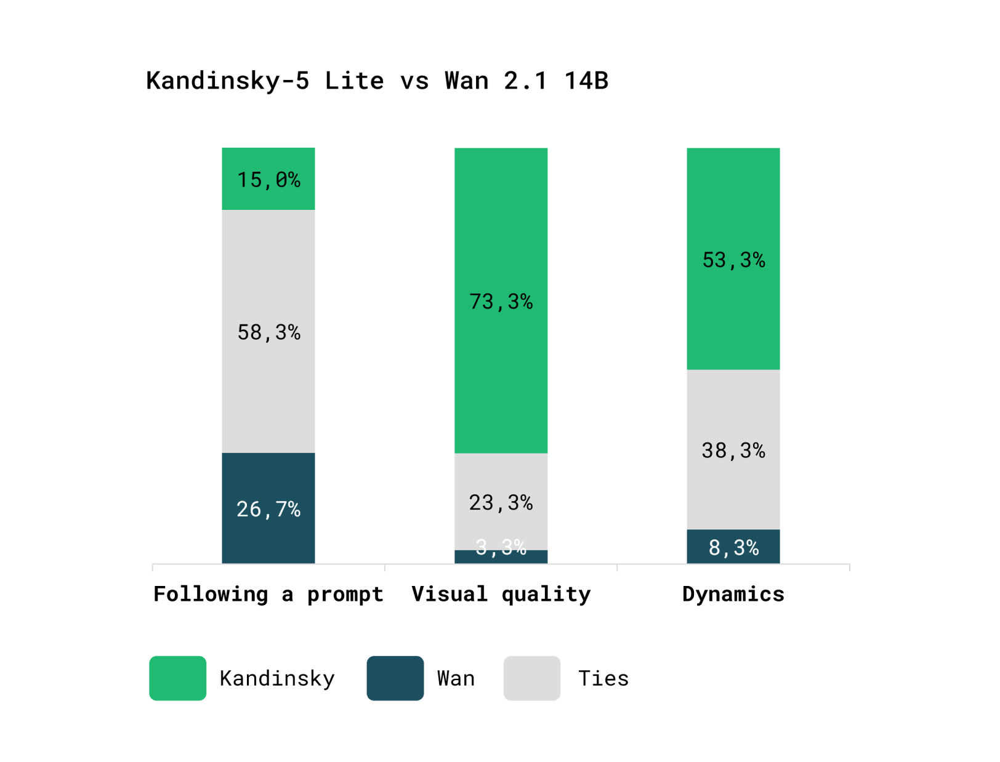
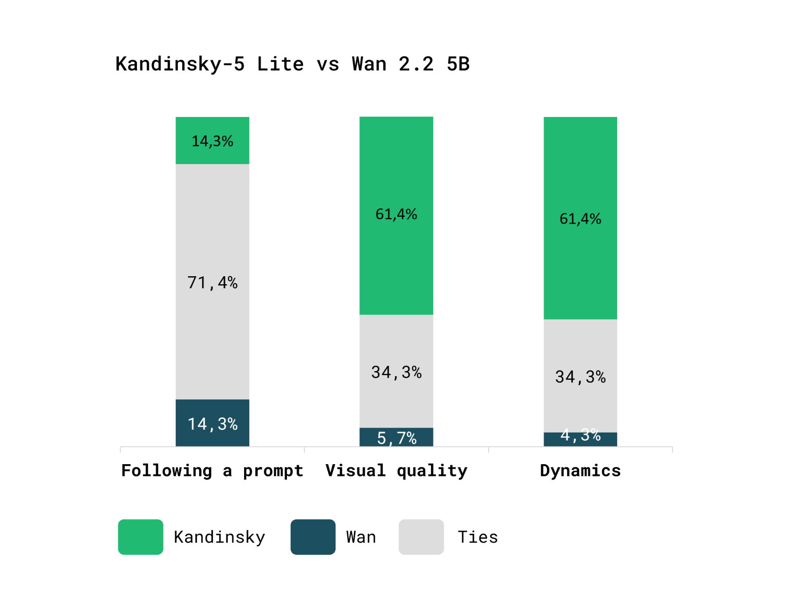
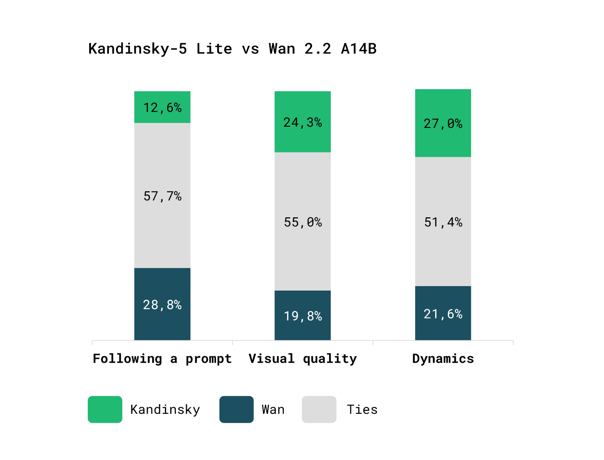

Overall pipeline

Latent diffusion pipeline with Flow Matching.
Kandinsky 5.0 – High-Level Architecture
Core paradigm
Diffusion Transformer (DiT) as the main generative backbone with cross-attention to text embeddings.

Model Inputs

Text-to-Video
Distilled model
We emphasize generation capabilities in the following categories:
People
Cinematic Effects
Animation
Animals and nature
Dynamic scenes
Russian Culture Code
Short English captions
Comparison with Other Models
Side-by-Side evaluation
The evaluation is based on the expanded prompts from the Movie Gen benchmark.
|  |  |
|  |  |
VBench results